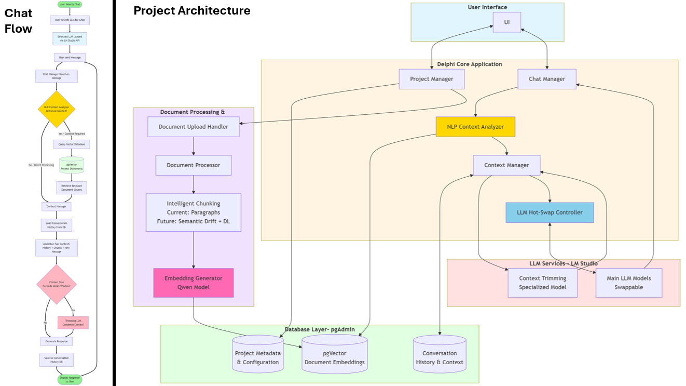

Ongoing work exploring local-first AI systems, retrieval-augmented generation, and long-term knowledge modeling.
An ongoing research project exploring local LLM orchestration, retrieval-augmented generation, and long-term conversational memory over a personal knowledge base.

Delphi is my ongoing effort to build a local-first AI assistant that can answer questions against a personal knowledge base (PDFs, notes, and reference material) without relying on a hosted chat product. The goal is to combine strong retrieval (so answers stay grounded in source material) with long-term conversational memory (so sessions can resume without losing context). It’s also a practical sandbox for exploring modern RAG design choices: chunking strategies, embedding models, reranking, and query routing.
I’m designing and building Delphi end-to-end: system architecture, database schema, ingestion pipeline, retrieval layer, and the LLM orchestration layer (routing + context assembly). I’m intentionally keeping the design modular so components can be swapped (local vs API models, different vector stores, different chunking strategies) without rewriting the system.
The hardest part has been getting the boundaries right: what belongs in the database layer, what belongs in retrieval, and what belongs in the orchestration layer. Early versions mixed responsibilities and made iteration painful. I’ve also learned how quickly “RAG quality” becomes a systems problem rather than an LLM problem, chunking, embedding choice, metadata, and retrieval filters often matter more than model size once you’re working with real documents.
Working prototype with project-scoped chats, a rough document ingestion flow, and basic retrieval-backed responses. Core focus right now is improving grounding quality through chunking strategies, and better query routing.
Improving the document ingestion pipeline with more advanced chunking strategies, and retrieval evaluation.
Python · PostgreSQL (pgvector) · Local LLMs (LM Studio / Ollama) · Embeddings · RAG Pipeline · GitHub Projects · (Planned: Graph Layer / Neo4j, GUI)
Selected projects that have been deployed or used in real-world environments.
A real-time NLP-driven dashboard designed to streamline call center operations using LLMs, vector search, and custom widgets.
This project was part of my senior capstone for the Applied Computer Science degree at the University of Winnipeg. Our industry sponsor was building a SaaS platform aimed at improving real-time decision-making in call centers using natural language processing and speech-to-text technology.
As team lead and full-stack developer, I designed and implemented key features such as database schemas, natural language processing of user inputs, vector-based context search, and back-end integration with the LLM and encoder APIs. I also helped define internal development processes, was the "big picture" engineer/architect, as well as the point person for stakeholder communication.
This was my first time working with vector and graph databases, and LLMs in a production-style setting. One key challenge was getting consistent, relevant output from the LLMs when context size and embedding quality varied. I learned a lot about prompt tuning, modular system design, and the tradeoffs of different vector search techniques.
I’d invest more time early on into setting up linting and a style guide to reduce integration friction. I’d also involve end-users earlier in the UI/UX testing process, especially since some of our assumptions around dashboard layout didn’t fully match how users interacted with the data.
React · Tailwind · Flask · PostgreSQL · Weaviate · OpenAI API · LangChain · GitHub Projects
A graph-based matching tool that pairs study participants across two cohorts by maximizing similarity across physiological constraints, replacing manual matching in a real research lab.
This tool was developed for an exercise physiology research lab to automate the matching of study participants across two predefined cohorts, such as men to women or younger participants to older participants. Matches were based on physiological similarity rather than availability. Constraints included factors such as age, height, weight, and VO₂ max, with the goal of producing well-matched pairs that minimized confounding variables in study design. Prior to this tool, participant matching was performed manually using spreadsheets and visual inspection. This approach was time-intensive, difficult to scale, and often made it challenging to ensure that the maximum number of viable participant pairs were matched.
I designed the matching logic, implemented the algorithm, and built the application end-to-end. This included formalizing the lab’s matching criteria into a quantitative model and translating those criteria into a graph-based matching problem. I also worked directly with lab users to validate that the resulting matches aligned with their research expectations.
As my first real-world software project, this application was a major learning experience. I gained hands-on experience building an interface that was intuitive for non-technical users, translating informal requirements into code, and iterating based on real user feedback. It highlighted the importance of designing around actual workflows rather than idealized assumptions, especially in research environments where edge cases are the norm.
If I were to rebuild this system, I would explore integrating qualitative encodings so users would not be restricted to a fixed number of quantitative variables with simple ± thresholds. This would expand the tool’s applicability beyond purely quantitative exercise science studies to other research domains where similarity is more contextual or categorical in nature.
Python · Graph Algorithms (Bipartite Matching) · Tkinter · CSV Data Pipelines · GitHub